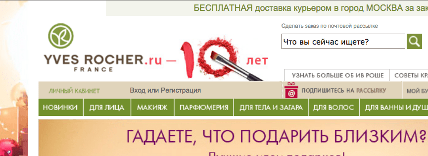

One of those days
Broadchurch
Какой-то совершенно офигенный сериал. А как они там все говорят! А какой там кайфовый саундтрек! Аааааа!
Dallas Buyers Club
Очень хорошее кино!
Русская ловушка
Александр Аузан очень хорошо и емко все сформулировал:
Декан экономического факультета МГУ Александр Аузан, выступая на панельной дискуссии «Институциональная модернизация России» на Гайдаровском форуме, ввел понятие «русской ловушки» — отторжение культурной средой России всех попыток инноваций. По его словам, эта ловушка имеет три аспекта — высокий уровень избегания неопределенности со стороны экономических агентов, избегание власти и конфликтный индивидуализм при низкой договороспособности, но это «не приговор, а диагноз».
Что тут еще можно добавить? Пусть это и "не приговор", но я все больше склоняюсь к мысли, что вылечить эту болезнь у ныне живущих наших граждан будет крайне сложно (читай: невозможно). Все, что можно и нужно сделать — это кардинальным образом изменить систему образования, начиная с детского сада и заканчивая ВУЗами: начать растить свободных и независимых граждан — вот первостепенная задача, которая, как мы видим, нынешнему руководству нашей страны, совсем не с руки; ему гораздо удобнее управлять серой и безликой, уперевшей свой взор в зомбоящик, массой. Увы.
Зачем смотреть в стол?

Последнее слово Алексея Навального на процессе по делу Ив Роше. Прочитайте.
NGC-7331
Тем временем, в созвездии Пегаса (!) наблюдается вот такая красота! Ну или вот про 2 года Curiosity на Марсе.
Но видите, как получается
— Значит, комитет по образованию считает, что моя ориентация — это аморально?
— Да-да, в школе нельзя. Мне начальство сказало: не надо крови, не надо статьи. От нас не отстанут. Может, вам есть смысл фамилию сменить? Выхода у нас нет — только по собственному желанию.
...
— Вы же знаете: я пришла сюда работать не за большими деньгами. Я пришла на зарплату в семь тысяч рублей после зарплаты в 46 (Анастасия работала продавцом в спортивных магазинах — прим. «Медузы»). Мне нравится школа, мне нравится коллектив, мне нравится, что мы много всего придумываем, мы выигрываем конкурсы.
— Сейчас фортуна отвернулась, но это не значит, что жизнь кончилась.
— У вас ко мне претензий нет по работе?
— Нет. Ирина Борисовна тоже считает, что вы хорошо работаете. Но видите, как получается.
Мрак.
via meduza.io
Lary FDW motion-vinyl designed by typeholics
Рубль vs Доллар
В ожидании краха доллара можно поизучать историю рубля (периоды на графике кликабельны).